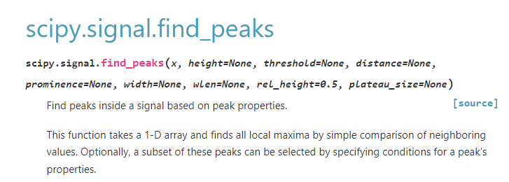
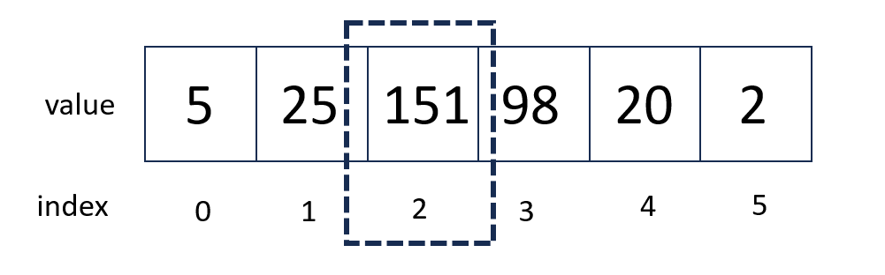

Case Study - X-ray Photoelectron Spectroscopy (XPS)#
Overview
Questions:
How can I use Python to fit analyze XPS data?
Objectives:
Use pandas to read XPS data.
Use SciPy to find peaks.
Create interactive plots data.
Perform a background subtraction.
Find and fit peaks with Gaussian functions.
XPS is a surface-sensitive quantitative technique that measures the elemental composition, empirical formula, chemical state, and electronic state of elements present in a material. It works on the principle of photoemission, where an X-ray beam ejects core-level electrons from the surface of the sample, and the kinetic energy of these electrons is measured.
In this notebook, we will process XPS spectra of silicon. We will use many of the skills learned in previous notebooks including processing data using pandas and visualization using plotly. This notebook introduces a new library - SciPy. SciPy is an advanced Python library tailored for scientific computing and analysis. We will use SciPy for peak fitting and integration.
Note that this notebook is not a best practices for XPS analysis - rather it shows you Python strategies that can be used for data processing and analysis.
For this notebook, we will be using pandas, plotly, scipy, and numpy.
We will follow these steps:
Analyze wide scan spectrum - We will read in the wide scan and use SciPy
find_peaksto find peaks.Analyze narrow spectra - For the oxygen and silicon peaks, we will do a more in-depth analysis.
For the narrow spectra, we will:
Load in the data.
Perform a background correction using a polynomial fit to the background.
Fit peaks in the spectrum using a Gaussian function.
Integrate each peak.
import pandas as pd
import numpy as np
import plotly.express as px
from scipy.signal import savgol_filter, find_peaks
from scipy.optimize import curve_fit
from scipy.integrate import simpson, quad
Reading in Data#
In this notebook, we will again use pandas to read in our data.
For past notebooks, we have used the read_csv function.
However, the data set we will use for this notebook is in a tab delimited file.
We could use read_csv with this data, and specify that the delimiter is a tab character.
However the read_table function is more general for this purpose.
When you examine the data for this notebook by viewing one of the files, you will see something like the following:
1.3500000e+003 6.5014286e+003
1.3495000e+003 6.4672997e+003
1.3490000e+003 6.4709445e+003
1.3485000e+003 6.4449666e+003
There are no headers for this data, so we will tell pandasthat by putting in the argument header=None.
wide_scan = pd.read_table("si_data/N0125701.asc", header=None)
wide_scan.head()
| 0 | 1 | |
|---|---|---|
| 0 | 1350.0 | 6501.4286 |
| 1 | 1349.5 | 6467.2997 |
| 2 | 1349.0 | 6470.9445 |
| 3 | 1348.5 | 6444.9666 |
| 4 | 1348.0 | 6430.1221 |
Because there is no header, our columns do not yet have names.
We will rename the columns to energy and intensity.
wide_scan.columns = ["energy", "intensity"]
wide_scan.head()
| energy | intensity | |
|---|---|---|
| 0 | 1350.0 | 6501.4286 |
| 1 | 1349.5 | 6467.2997 |
| 2 | 1349.0 | 6470.9445 |
| 3 | 1348.5 | 6444.9666 |
| 4 | 1348.0 | 6430.1221 |
Visualizing the Data#
Upon loading the data initially, you would probably wish to examine it.
We will plot our data using plotly express and px.line.
If you look at the order of the energy data in the wide_scan dataframe above, you will see that the energy
is listed from highest to lowest. Typically XPS spectra are shown with the highest enregy on the left side of the axis.
In order to have our graph appear this way, we can use fig.update_xaxes(autorange="reversed")
Why do we reverse the x axis?
We reverse the x axis on XPS spectra so that the order of the peaks represent how tightly bound electrons are. When the axis is reversed, more tightly bound electrons are on the left, and more loosely bound electrons are on the right.
# Create an interactive plot of the wide scan
fig = px.line(wide_scan, x="energy", y="intensity") # line plot of data
fig.update_xaxes(autorange="reversed") # reverse x axis
fig.show()
Data Smoothing#
Sometimes data may be noisy and require smoothing. The data set we are working with does not require smoothing, but an example is shown below in case you need to smooth data!
smoothed = pd.DataFrame(savgol_filter(wide_scan, window_length=10, polyorder=3, axis=0))
smoothed.columns = ["energy", "intensity"]
# Create an interactive plot of the wide scan
fig = px.line(smoothed, x="energy", y="intensity")
fig.update_xaxes(autorange="reversed")
fig.show()
Peak Finding#
On our XPS spectrum, the position of peaks tells us what elements are present in the sample. In order to analyze our spectrum, we would want to find the peaks, then compare our peaks to peaks of known elements.
SciPy provides a function called find_peaks that we will use to automatically pick peaks from our spectrum.
A screenshot of the documentation find_peaks function is shown below. Note, that if you click the link above you will see a more in-depth explanation.

We will use the prominence keyword to define how much a peak must stand out from its neighbors. This will prevent us from picking peaks based on noise.
# Fit the peaks of the wide scan
peak_index, properties = find_peaks(x=wide_scan["intensity"], prominence=1000)
print(peak_index)
[ 247 666 699 740 1326 1589 1633 1898 2128 2294 2329 2362 2390 2397
2428 2465 2492 2500 2648 2683]
SciPy has returned the index numbers for the peaks, rather than information about the peaks themselves.
To understand what this means, consider the image below.
If we were trying to find the peak for the list of numbers below, SciPy would return 2 to us - the index number of the maximum.

In our example above, if we wanted to get the actual value of the peak, we would need to index into our list.
We will use .iloc along with the peak_index returned from SciPy to get the locations of our peaks from our dataframe.
peaks = wide_scan.iloc[peak_index].copy()
peaks.reset_index(inplace=True, drop=True)
peaks.head()
| energy | intensity | |
|---|---|---|
| 0 | 1226.5 | 10368.952 |
| 1 | 1017.0 | 19281.154 |
| 2 | 1000.5 | 24225.567 |
| 3 | 980.0 | 35057.086 |
| 4 | 687.0 | 18176.167 |
We can now visualize our peak locations using plotly.
fig = px.line(wide_scan, x="energy", y="intensity")
fig.add_scatter(x=peaks["energy"], y=peaks["intensity"],
mode="markers",
name="peaks")
fig.update_xaxes(autorange="reversed")
fig.show()
Exercise
As you can see, just using the find_peaks function returns many more peaks to us than we would choose to label.
Read the documentation for the find_peaks function.
Try different arguments in order to find appropriate peaks in the spectrum.
To continue with the tutorial, change your find_peaks function above to:
peak_index, properties = find_peaks(x=wide_scan["intensity"], prominence=1000)
Peak Labeling#
We might wish to add another column to our table that gives the peak identities. We can first create an empty column in our data frame for peak identities. We will start by creating a blank column
# Create a blanke column called "labels" with nothing in it.
peaks["labels"] = None
# Preview the first 20 rows of the dataframe.
peaks.head(20)
| energy | intensity | labels | |
|---|---|---|---|
| 0 | 1226.5 | 10368.9520 | None |
| 1 | 1017.0 | 19281.1540 | None |
| 2 | 1000.5 | 24225.5670 | None |
| 3 | 980.0 | 35057.0860 | None |
| 4 | 687.0 | 18176.1670 | None |
| 5 | 555.5 | 29428.6980 | None |
| 6 | 533.5 | 157753.3300 | None |
| 7 | 401.0 | 20934.1300 | None |
| 8 | 286.0 | 37744.8000 | None |
| 9 | 203.0 | 27499.9730 | None |
| 10 | 185.5 | 29156.9240 | None |
| 11 | 169.0 | 32894.4250 | None |
| 12 | 155.0 | 37736.2530 | None |
| 13 | 151.5 | 60643.5750 | None |
| 14 | 136.0 | 16721.1410 | None |
| 15 | 117.5 | 20698.2750 | None |
| 16 | 104.0 | 31111.1640 | None |
| 17 | 100.0 | 66897.2200 | None |
| 18 | 26.0 | 5284.1132 | None |
| 19 | 8.5 | 2316.5378 | None |
Next, we will fill in identities for some of the peaks. For example, from looking up a reference table, we would know that the peak at 100 is \(Si\), and the peak at 104 is \(Si\) in \(SiO_2\).
peaks.loc[17, "labels"] = "Si"
peaks.loc[16, "labels"] = "Si (SiO2)"
peaks.head(20)
| energy | intensity | labels | |
|---|---|---|---|
| 0 | 1226.5 | 10368.9520 | None |
| 1 | 1017.0 | 19281.1540 | None |
| 2 | 1000.5 | 24225.5670 | None |
| 3 | 980.0 | 35057.0860 | None |
| 4 | 687.0 | 18176.1670 | None |
| 5 | 555.5 | 29428.6980 | None |
| 6 | 533.5 | 157753.3300 | None |
| 7 | 401.0 | 20934.1300 | None |
| 8 | 286.0 | 37744.8000 | None |
| 9 | 203.0 | 27499.9730 | None |
| 10 | 185.5 | 29156.9240 | None |
| 11 | 169.0 | 32894.4250 | None |
| 12 | 155.0 | 37736.2530 | None |
| 13 | 151.5 | 60643.5750 | None |
| 14 | 136.0 | 16721.1410 | None |
| 15 | 117.5 | 20698.2750 | None |
| 16 | 104.0 | 31111.1640 | Si (SiO2) |
| 17 | 100.0 | 66897.2200 | Si |
| 18 | 26.0 | 5284.1132 | None |
| 19 | 8.5 | 2316.5378 | None |
Exercise
Use the following reference table to identify the oxygen peak.
After you have identified it, add a label to the appropriate row.
We can add labels to our graphs by adding a text and textposition argument to our plot.
Use the cell below to visualize your plot with labels.
You may need to change the range of the y-axis once you have added the oxygen plot. You can do so with the command
fig.update_yaxes(range=[minimum_y_value, maximum_y_value])
fig = px.line(wide_scan, x="energy", y="intensity")
fig.add_scatter(x=peaks["energy"], y=peaks["intensity"],
mode="markers+text",
name="peaks",
text=peaks["labels"], # this was added to add labels
textposition="top center", # this was added to position the labels.
)
fig.update_xaxes(autorange="reversed")
fig.show()
Peak Analysis#
A common practice in XPS analysis is to analyze particular peaks in order to determine the chemical states, concentrations, and elemental composition of a sample. For the next section of this notebook, we will consider a close-up view of the Si peaks. We will fit and subtract the background signal, then we will fit Gaussian functions to the peaks.
# data loading
si_peaks = pd.read_table("si_data/N0125702.asc", header=None)
# add column names
si_peaks.columns = ["energy", "intensity"]
# visualize
si_fig = px.line(si_peaks, x="energy", y="intensity")
si_fig.update_xaxes(autorange="reversed")
si_fig.show()
Background Subtraction#
Upon viewing the figure above, we can see the presence of some background signal, particularly on the left side of the graph. Using your mouse hovering over the graph to examine, you might decide that for the peak on the left the background corresponds to energies less than 98.5 eV or greater than 106.5 eV.
In the cell below, we select parts of our signal that fit that criteria using
(98.5 > si_peaks["energy"]) | (si_peaks["energy"] > 106.5)
in this syntax, | represents “or”. The phrase above says that the energy should be less than 98.5 or greater than 106.5.
Similar to peak finding, this returns the index for where the statement is true.
We get the actual values by using the index with the peaks.
# define what we want to fit for background subtraction
background_index = (98.5 > si_peaks["energy"]) | (si_peaks["energy"] > 106.5)
background = si_peaks[background_index]
background.head()
| energy | intensity | |
|---|---|---|
| 0 | 112.000 | 3262.6982 |
| 1 | 111.875 | 3229.2760 |
| 2 | 111.750 | 3138.2208 |
| 3 | 111.625 | 3037.6669 |
| 4 | 111.500 | 3043.9405 |
We can visualize what we’ve selected for the background by adding more data to the figure we created previously.
si_fig.add_scatter(x=background["energy"], y=background["intensity"], mode="markers", name="background")
si_fig.show()
In order to subtract out this background, we will fit a polynomial function to our selected data then subtract it from the signal. This will adjust our baseline to 0.
To do this in Python, we will use a function from numpy called polyfit. polyfit is specifically for fitting polynomials of any order.
To use polyfit, you pass in your x values, your y values, and your desired polynomial degree.
For this particular case, it looks as though a linear fit (polynomial degree=1) will be sufficient.
However, you could increase this or change it if you needed a different polynomial degree.
# Fit a polynomial of degree 1
fit = np.polyfit(background["energy"], background["intensity"], 1)
print(fit)
[ 137.77256437 -12432.6279266 ]
What is returned to us in fit is the parameters for the fit.
In this case, the first value is our slope and the second is the intercept.
We can pass this into another function np.polyval to evaluate the value of the polynomial at given energies.
We will simply evaluate the fit over the whole energy range for these peaks.
# Get fit values
vals = np.polyval(fit, si_peaks["energy"])
We can add this to our visualization to evaluate our fit.
si_fig.add_scatter(x=si_peaks["energy"], y=vals, name="background fit")
si_fig.show()
Now that we have determined the equation for our background, we can subtract it from our intensity to get our corrected peaks.
# Subtract the background
si_peaks["corrected_intensity"] = si_peaks["intensity"] - vals
fig_corrected = px.line(si_peaks, x="energy", y="corrected_intensity")
fig_corrected.update_xaxes(autorange="reversed")
Exercise
Read in data for the oxygen peak and perform a background correction.
The data for the oxygen peak is in the file si_data/N0125704.asc.
Be sure to save oxygen data in appropriate variable names. You will use both O and Si data later.
Numerical Integration of Peaks#
Although it is possible to fit a function to each peak and perform integration, we can also analyze our spectrum by doing numerical integration.
SciPy offers a number of functions for doing numerical integration (see “Methods for Integrating Functions given fixed samples”).
We will somewhat arbitrarily use simpson.
We imported this at the beginning of the notebook with from scipy.integrate import simpson.
As a reminder, our peaks look like the following:
fig_corrected = px.line(si_peaks, x="energy", y="corrected_intensity")
fig_corrected.update_xaxes(autorange="reversed")
To use simpson for integration, you first pass in your y values, then your x values.
si_peak_area = simpson(y=si_peaks["corrected_intensity"], x=si_peaks["energy"])
print(si_peak_area)
-70753.53302458859
Notice that our area is negative. This is because our energies are listed in descending order (highest to lowest). This matters when we are doing numerical integration. We can fix this by sorting our dataframe based on the energy.
si_peaks.sort_values(by="energy", inplace=True)
si_peaks.head()
| energy | intensity | corrected_intensity | |
|---|---|---|---|
| 160 | 92.000 | 634.7571 | 392.309105 |
| 159 | 92.125 | 627.9534 | 368.283834 |
| 158 | 92.250 | 608.5805 | 331.689364 |
| 157 | 92.375 | 599.8107 | 305.697993 |
| 156 | 92.500 | 600.6060 | 289.271723 |
Now we can repeat the integration and get the correct sign.
si_peak_area = simpson(y=si_peaks["corrected_intensity"], x=si_peaks["energy"])
print(si_peak_area)
70753.53302458859
Exercise
Repeat the integration for the oxygen peak.
After you have calculated the area of the oxygen peak, figure out the ratio of Si to O in you material by taking the ratio of the calculated areas.
Fitting Peaks with Gaussian Functions#
The following is supplemental material. If you would like to be more rigorous with your peak fitting, you might choose to fit the peaks with a Gaussian instead of performing numerical integration.
In order to integrate peaks in XPS, peaks are often fit with a Gaussian function. The Gaussian function is represented by the equation below:
Where:
\(A\) is the amplitude of the peak.
\(B\) is the position of the center of the peak (mean or expected value).
\(C\) determines the width of the Gaus In order to fit this data, we will use a function from
sclledcurve_fit.ledc.curve_fitallows you to fit parameters for functions that you
Sometimes, a peak may be fit with multiple Gaussian if one does not describe the peak well.define.
In order to use curve_fit, we must first write aon for functithe equation we would like to fit.
The cell below defines a Gaussian function using the parameters \(A\), \(B\), a
We also define a function called double_gaussian that contains a fit with two Gaussian functions added together.riance.
def gaussian(x, A, B, C):
y = A*np.exp(-(x-B)**2/(2*C**2))
return y
def double_gaussian(x, a1, b1, c1, a2, b2, c2):
g1 = a1 * np.exp(-(x - b1)**2 / (2 * c1**2))
g2 = a2 * np.exp(-(x - b2)**2 / (2 * c2**2))
return g1 + g2
To peform our fit, we’ll first need to pick a peak of interest.
We will do this in a way that is very similar to what we did for the background.
This time, we can use between
# Pick a peak
peak_1 = si_peaks[si_peaks["energy"].between(99.25, 101.5)]
peak_1.head()
| energy | intensity | corrected_intensity | |
|---|---|---|---|
| 102 | 99.250 | 5402.0740 | 4160.774913 |
| 101 | 99.375 | 9914.7366 | 8656.215942 |
| 100 | 99.500 | 16621.3370 | 15345.594772 |
| 99 | 99.625 | 24149.5770 | 22856.613201 |
| 98 | 99.750 | 30116.1840 | 28805.998631 |
# visualize the peak
fig_narrow = px.line(peak_1, x="energy", y="intensity")
fig_narrow.update_xaxes(autorange="reversed")
fig_narrow.show()
We can see that this peak doesn’t look symmetrical - that is, it may not be well-described by a Gaussian. We will try fitting it with our two Gaussian function.
In the cell below, we use the curve_fit function.
The first argument is the function you want to fit, followed by the x values, then y values.
Finally, we specify p0, this is an initial guess for the parameters.
By examining the peak in the graph above, we might specify an initial guess of 30,000 for the peak height, 100 for the center of the peak, and 1 for the peak width for both Gaussians.
parameters_1, covariance_1 = curve_fit(double_gaussian, peak_1["energy"], peak_1["intensity"],
p0=[30000, 100, 0.1, 30000, 100, 0.1])
print(parameters_1)
[ 1.39402960e+09 3.89362337e+01 -5.62523850e+03 -1.39401589e+09
1.64111921e+02 5.62849939e+03]
We can compare our model to our actual peak by putting our x values into our gaussian function, along with our peak parameters.
In the cell below, we use *parameters_1.
When we use this with a list, it fills in each element into the function arguments.
# Get fit values
fit_y = double_gaussian(si_peaks["energy"], *parameters_1)
Taking a wider view, we can examine our fit against the original Si peaks.
fig_fit = px.line(si_peaks, x="energy", y="corrected_intensity")
fig_fit.add_scatter(x=si_peaks["energy"], y=fit_y)
fig_fit.update_xaxes(autorange="reversed")
fig_fit.show()
Peak Integration#
Now that we have our peak, we can integrate it using SciPy.
We will use the quad function we imported at the top of the file.
In the quad function, you first pass the function you would like to integrate, followed by the lower and upper integration bounds.
In our case, we need to pass in our fit parameters as arguments to the double_gaussian function as well. That is done with the
syntax args=(*parameters_1,).
result, error = quad(double_gaussian, 98, 102, args=(*parameters_1,))
result
88031.21388365336
Exercise
Repeat the analysis for the second Si peak and for the O peak.
Exercise
Repeat the full analysis starting from background subtraction for the oxygen peak.
Once you have fit and integrated the oxygen peak, you can compare the ratio of Si to O in the material by taking the ratio of the area of the silicon peaks to the oxygen peak.